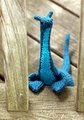

|
||
Premium Patterns Wintry Mix Mitts Love Bytes HawkeyeFree Patterns Kiddie Cadet Summerlin Ruffled Scarf Seamless DS Sock Simply Seamless Pouch Myriads of MushroomsExtras DIY Mitten Blocker Felt Patch Tutorial Yarn Dyeing Tutorial Needle Pouches Knitting Journal |
June 26, 2008 - Posted by Grace SchneblyLong time no see!… and we're back! Hi everybody, sorry Alice and I have been MIA for about a month now. We've both been crazy busy. I finally got moved into my new place here in Quincy and Alice has had a ton of visitors and lots of work to do on her own place. Which reminds me, before I forget I wanted to mention that we have set up the Homebodies Ravelry group! It's dedicated to everything relating to the home, so please swing by, check it out, and feel free to post any questions or ideas you may have. I'm finally getting settled in and was actually able to pick my needles back up after a month totally devoid of knitting. I don't think I've gone that long without knitting since I first learned! I definitely felt rusty, but I'm getting back into the swing of things. Alice and I are going to start posting here regularly again, so thanks for sticking with us! Now onto the knitting… Project Specs It's not every day that you see a Loch Ness Monster in your back yard... I guess it turns out that they're not confined to Scotland! This pygmy variety has been spotted across the country from Massachusetts to California and in Europe too! Thanks to Hansi Singh, Loch Ness Monster sightings have gone up dramatically. Wally, was fun to knit although it did feel like a lot of work went into making him. The instructions are clear and well written and the construction is very similar to her other patterns. If you don't like doing kitchener stitch, short rows, or picking up stitches then this might not be the pattern for you. However by use of these techniques in her patterns you're left with an almost seamless knit toy, and in my opinion that always leads to a better looking finished product. I say almost seamless because you will have to use mattress stitch to seam up the tail, but that and weaving in/burying about 20 ends is all the finishing required. I only changed two minor things on the pattern. First for the last 3/4 inch of the tail, the fabric was just to narrow to do mattress stitch so I ended up whip stitching the last few rows together. It isn't too noticeable and it works, but if I were to knit this pattern again I'd knit the tail in the round for the first few rows and then switch to knitting it flat closer to the belly. The other thing I changed was the eyes. Instead of embroidering them, I used 6 mm safety eyes. I think they give him a real cute cartoonish expression compared to the more serious expression he hand when I embroidered the eyes on. A while back I bought a size US 4 Addi Lace needle specifically for Hansi's patterns, and boy am I glad I did! This is the first pattern that I've tried it out on, and it was really convenient. Since you work at a pretty tight gauge, the stitches can get caught up on the bamboo DPNs I usually use, but with the metal tips they just glide along. Also the pointyness of the lace tips makes it a lot easier to do increases like M1R! I'd definitely recommend getting at least one Addi Lace needle if you plan on making several of Hansi's patterns. Another tip I have is to always have a pair of tweezers handy at all times. There are so many long narrow parts in her designs which are impossible to stuff if you try and just use your fingers. With tweezers you'll be able to get stuffing into even the tightest spaces and it will save you a lot of time and frustration in the end! I think this pattern would be a great gift for kids, especially those who like dinosaurs, Pokemon (it looks a lot like Lapras), or the movie Water Horse. I'm really glad that I finished Wally up when I did because Hansi just released a new Praying Mantis pattern that, of course, looks really awesome! |
   Recent ReviewsRecent Posts
 Our Favorites
|
| © 2007 KathrynIvy.com | ||
{kind=link}
{kind=link}